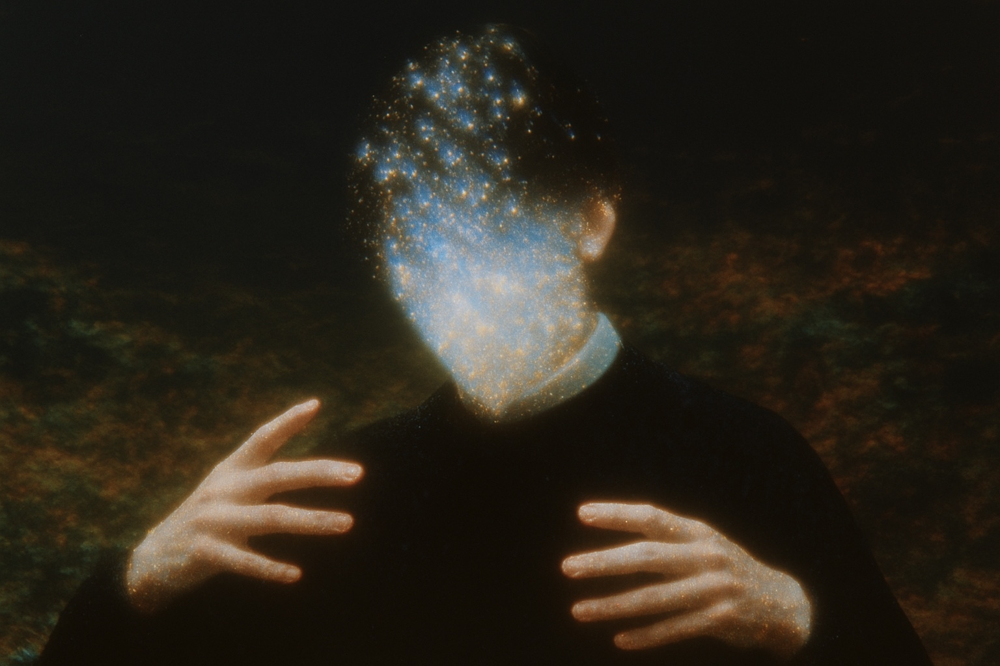

+
×
=
+
×
Vibra
GitHub
La terminal que necesitas
para vibe coding.
App nativa para macOS. Terminales, proyectos y agentes, en un solo lugar.
Download for macOS
Universal · macOS 14+ · Signed & notarized